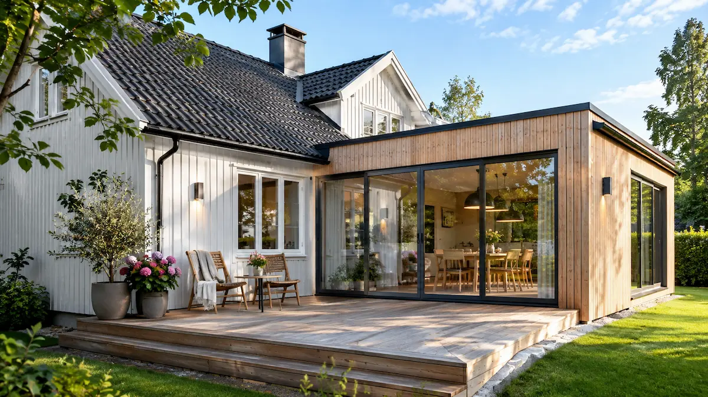
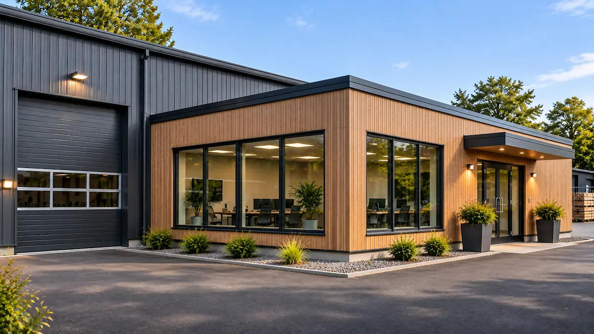

AI-genererad inspirationsbild
Modern tillbyggnad av villa
En tillbyggnad med stora glaspartier och träfasad som skapar nya sällskapsytor och en naturlig koppling mellan bostaden och uteplatsen.
Illustrativt exempel – inte ett utfört referensprojekt.
Byggt för framtiden
Mer utrymme för ditt hem eller din verksamhet. Genomtänkta tillbyggnader med fokus på funktion, kvalitet och ett hållbart resultat.
F. Bergstrand Bygg AB hjälper privatpersoner, företag och fastighetsägare med tillbyggnader av bostäder, kontor och verksamhetslokaler. Från grundläggning till färdiga utrymmen.

Tillbyggnad och utbyggnad
När bostaden eller verksamhetslokalen inte längre räcker till kan en tillbyggnad vara ett alternativ till att flytta. Genom att utveckla den befintliga fastigheten kan du skapa nya funktioner och bättre anpassade utrymmen.
En tillbyggnad kräver noggrann planering och genomtänkta anslutningar till den befintliga byggnaden. Grundläggning, stomme, isolering, tak och fasad behöver samverka för att skapa en välfungerande helhet.
Med över 10 års erfarenhet inom byggbranschen hjälper jag dig med både enskilda arbetsmoment och mer omfattande byggprojekt.
Tillbyggnader för privatpersoner
Behöver familjen ett extra sovrum, ett större kök eller mer plats för umgänge? En tillbyggnad kan ge bostaden nya möjligheter samtidigt som du kan bo kvar på den plats där du trivs.
Jag hjälper dig att utveckla din villa eller ditt fritidshus med nya utrymmen som anpassas efter byggnadens förutsättningar och dina behov.
Tillbyggnaden kan utformas för att smälta in i husets befintliga arkitektur eller skapa en modern kontrast med nya material och större fönsterpartier.
Tillbyggnader för företag
En växande verksamhet ställer ofta nya krav på lokalerna. Det kan handla om fler arbetsplatser, större personalutrymmen, nya mötesrum eller utökade lager- och verkstadsytor.
F. Bergstrand Bygg AB hjälper företag, fastighetsägare och andra verksamheter med tillbyggnader och anpassningar av befintliga byggnader.
Arbetet planeras utifrån verksamhetens behov, byggnadens förutsättningar och de krav som gäller för lokalens användning.
När verksamheten behöver fortsätta under byggtiden planerar vi arbetets olika moment för att så långt som möjligt begränsa störningar i den dagliga driften.
Inspiration och möjligheter
Två illustrativa exempel på hur en tillbyggnad kan anpassas till olika typer av fastigheter.
AI-genererad inspirationsbild
En tillbyggnad med stora glaspartier och träfasad som skapar nya sällskapsytor och en naturlig koppling mellan bostaden och uteplatsen.
Illustrativt exempel – inte ett utfört referensprojekt.

AI-genererad inspirationsbild
En modern kontorstillbyggnad i anslutning till en industribyggnad, med nya arbetsplatser, mötesutrymmen och separat entré.
Illustrativt exempel – inte ett utfört referensprojekt.
Kvalitet genom hela konstruktionen
En välbyggd tillbyggnad börjar med rätt förutsättningar. Grundläggningen behöver anpassas till marken, byggnadens konstruktion och de belastningar som uppstår.
Stomme, tak, fasad och isolering utförs enligt projektets tekniska förutsättningar och konstruktionshandlingar.
Särskild hänsyn behöver tas till anslutningen mellan den nya och befintliga byggnaden, bland annat när det gäller fukt, täthet, isolering och konstruktion.
En tydlig kontakt genom projektet
En tillbyggnad omfattar ofta flera olika yrkesgrupper och arbetsmoment som behöver planeras och samordnas.
Utöver mina egna bygg- och snickeriarbeten kan jag vid behov samordna arbetet med elektriker, VVS-montörer, plåtslagare, målare och andra yrkesgrupper.
Beroende på projektets omfattning och överenskommen entreprenadform kan jag ta ett samordningsansvar för byggprojektet eller utföra avgränsade delar av en större entreprenad.
Jag arbetar även åt andra byggföretag som behöver en erfaren och yrkesutbildad snickare för specifika arbetsmoment inom ett större projekt.
Så går det till
Du berättar om projektet, fastigheten och vilka nya utrymmen du behöver.
Vi går igenom ritningar, förutsättningar, material och arbetets omfattning. Du får en kostnadsfri offert.
Byggarbetena genomförs enligt överenskommen omfattning och projektets tekniska handlingar.
Avslutande arbeten färdigställs och vi går igenom resultatet tillsammans.
Planering och förutsättningar
Inför en tillbyggnad är det viktigt att kontrollera vilka regler som gäller för fastigheten och den planerade byggnationen.
Beroende på projektets storlek, placering, användning och fastighetens förutsättningar kan bygglov, anmälan eller andra godkännanden krävas.
Jag utför byggarbeten utifrån projektets ritningar och konstruktionshandlingar. Vid behov kan vi gå igenom vilka underlag och ytterligare yrkeskompetenser som behöver finnas innan byggstart.
För aktuella regler och bedömningar rekommenderar jag att du kontaktar byggnadsnämnden i den kommun där fastigheten ligger.
ROT-avdrag för privatpersoner
Vissa tillbyggnader av befintliga bostäder kan berättiga till ROT-avdrag, förutsatt att arbetet, bostaden och beställaren uppfyller Skatteverkets villkor.
ROT-avdraget gäller arbetskostnaden, inte material eller övriga kostnader. Särskilda begränsningar gäller bland annat för nybyggda bostäder.
Jag hjälper dig med hanteringen av ROT-avdraget när arbetet är berättigat till avdrag.
ROT-avdrag gäller inte för företag som bygger till sina verksamhetslokaler.
Läs mer om aktuella villkor hos Skatteverket.
Lokalt byggföretag
F. Bergstrand Bygg AB utgår från Ängelholm och utför byggarbeten i stora delar av nordvästra Skåne och södra Halland.
Jag hjälper privatpersoner, företag, fastighetsägare och andra byggföretag i bland annat Ängelholm, Båstad, Höganäs, Helsingborg, Halmstad, Klippan och Landskrona.
Har du ett projekt utanför dessa orter är du också välkommen att höra av dig, så ser vi över möjligheterna.
Vanliga frågor
Kostnaden beror bland annat på storlek, grundläggning, konstruktion, material, installationer och önskad standard. Kontakta mig för en kostnadsfri offert anpassad efter ditt projekt.
Ja. Jag hjälper till med byggarbeten från grundläggning och stomresning till invändiga snickerier och färdigställande. Projektets exakta omfattning bestäms i samband med offerten.
Ja. Jag arbetar med tillbyggnader och anpassningar av kontor, verksamhetslokaler, lager, verkstäder och andra fastigheter.
Det beror på projektets omfattning och lokalens förutsättningar. Vi planerar arbetet tillsammans för att så långt som möjligt begränsa störningar i verksamheten.
Det beror bland annat på tillbyggnadens storlek, placering och fastighetens förutsättningar. Kontrollera med kommunen vilka regler och krav som gäller för ditt projekt.
Ja. Jag utför byggarbeten enligt projektets ritningar och konstruktionshandlingar. Vi går igenom underlagen inför planering och offert.
Ja. Vid behov kan jag samordna andra yrkesgrupper så att projektets olika arbetsmoment planeras tillsammans.
Ja. Jag hjälper även byggföretag med enskilda bygg- och snickeriarbeten inom större entreprenader.
Tidsåtgången varierar beroende på projektets storlek, komplexitet, materialleveranser och övriga förutsättningar. En preliminär tidsplan tas fram vid planeringen.
Vissa tillbyggnader av befintliga bostäder kan omfattas av ROT-avdrag när Skatteverkets villkor är uppfyllda. Jag hjälper dig med hanteringen när arbetet är berättigat till avdrag.
Ja. Du är välkommen att kontakta mig för en kostnadsfri offert utan köpkrav.
Fler byggtjänster
En tillbyggnad omfattar ofta flera olika byggtjänster. F. Bergstrand Bygg AB hjälper dig även med renoveringar, takarbeten, fasadrenoveringar och installation av fönster och dörrar.
Kontakta mig
Oavsett om du vill bygga ut din bostad eller utveckla företagets lokaler är du välkommen att höra av dig.
Berätta om ditt projekt så går vi tillsammans igenom dina behov och förutsättningar.
Kontakta F. Bergstrand Bygg AB för en kostnadsfri offert.
F. Bergstrand Bygg AB
Ängelholm